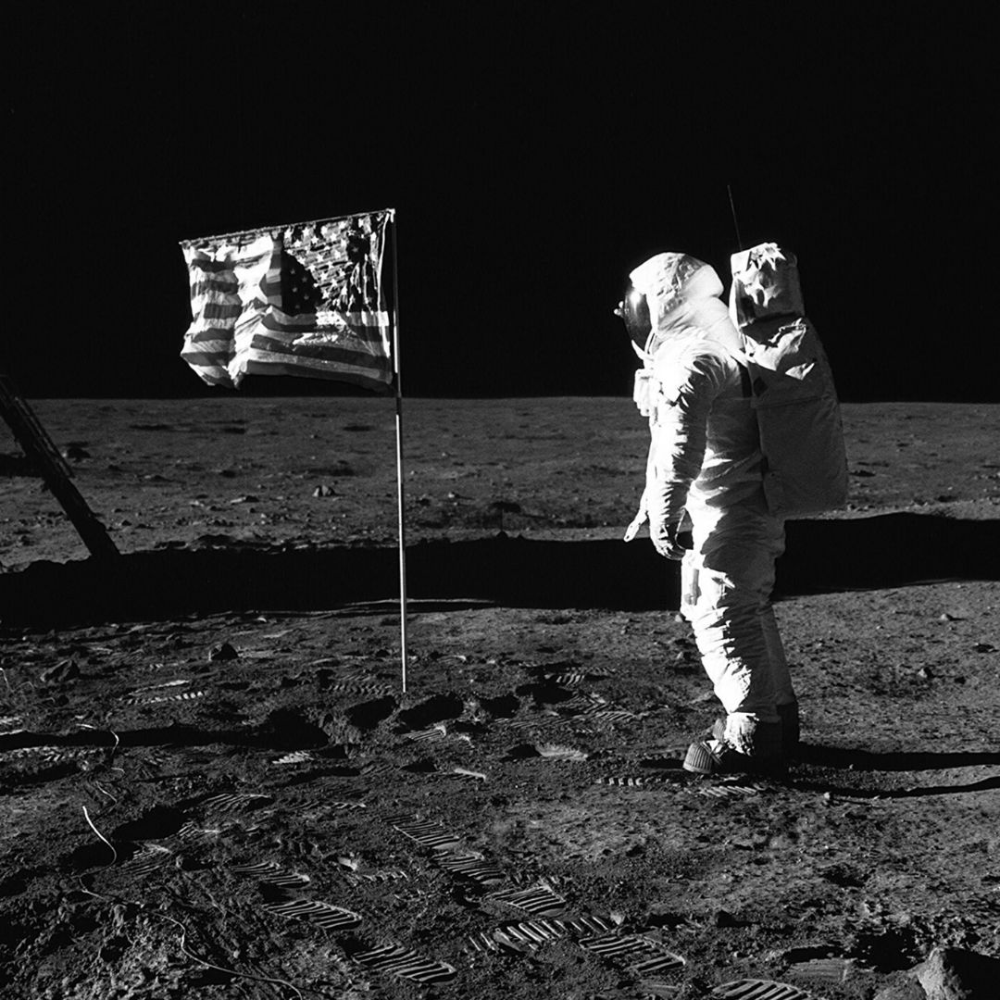
APOLLO 11
A superfície lunar.
1969
GALERIA ASTRA
Algumas imagens registram momentos históricos. Outras revelam fenômenos que nossos olhos jamais conseguiriam observar diretamente.
Explorar galeria →
1969
2015
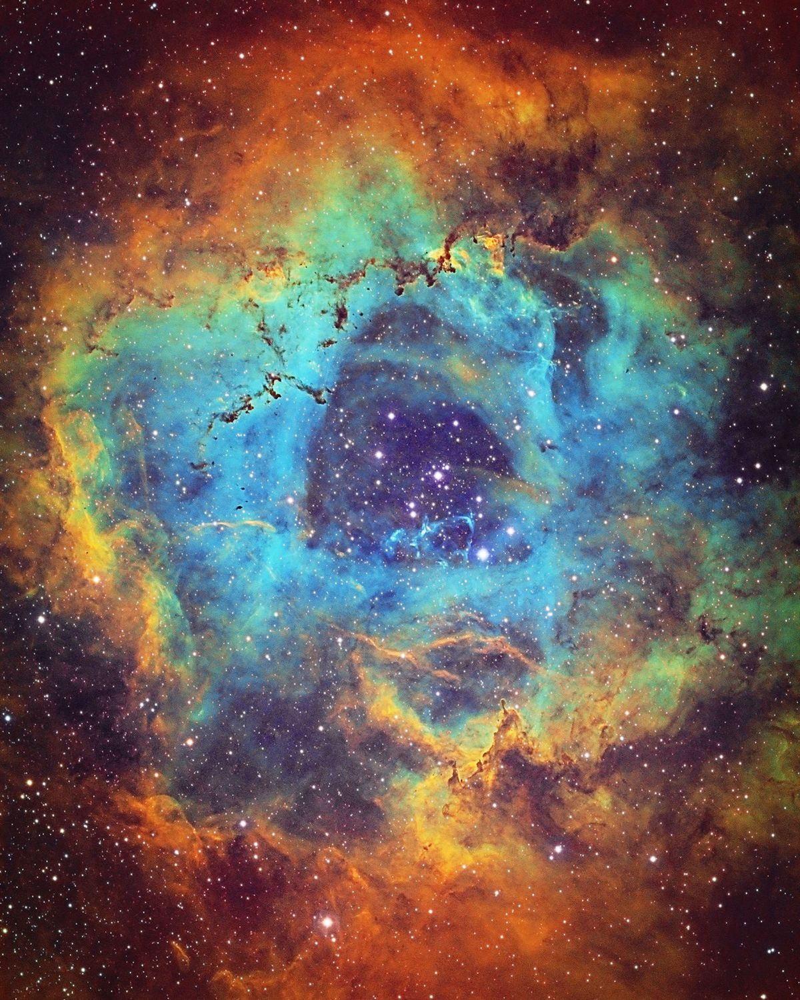
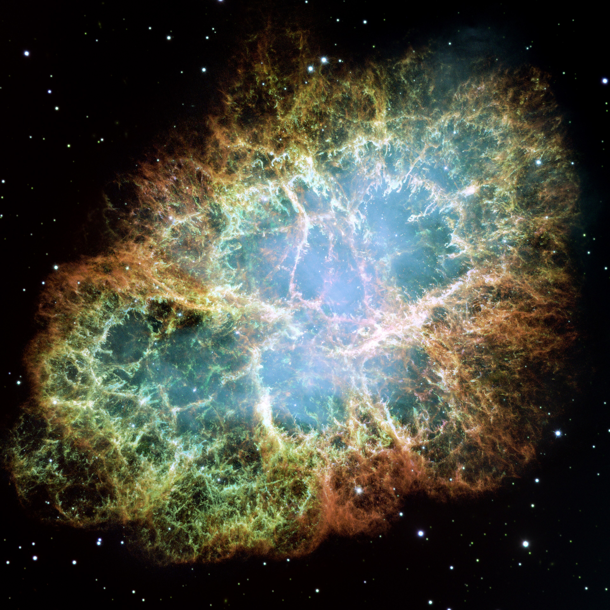
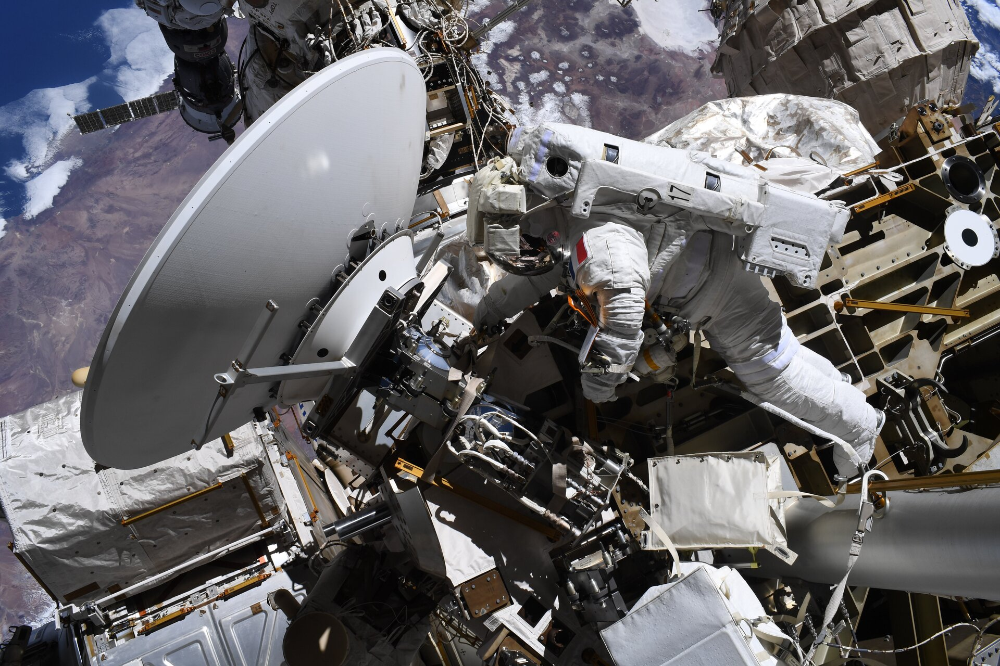
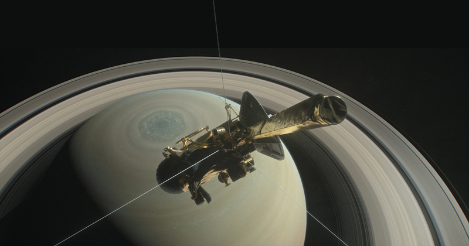
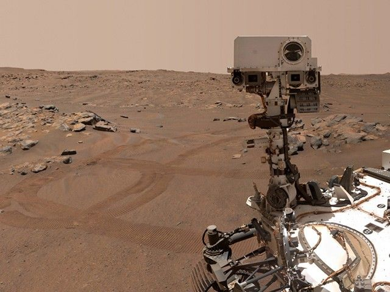
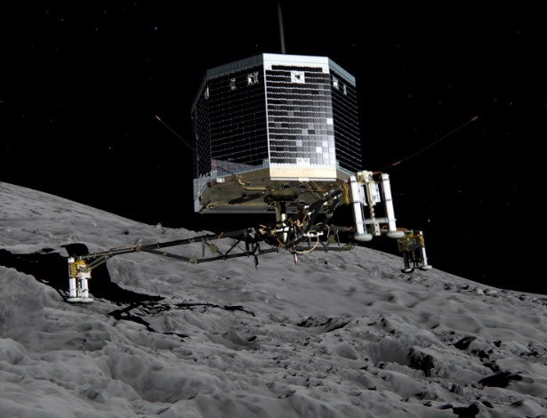
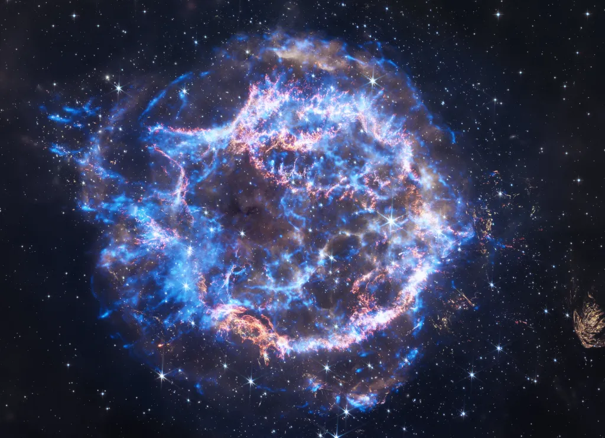
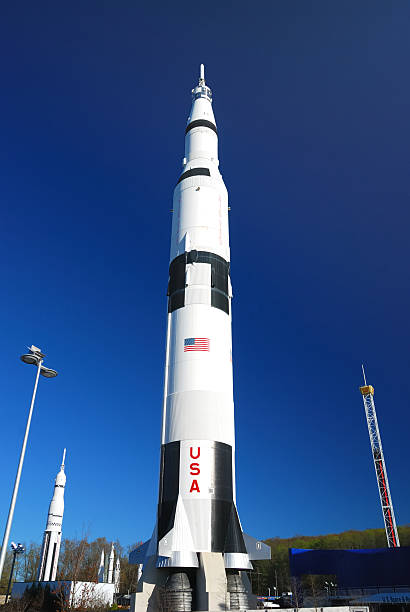

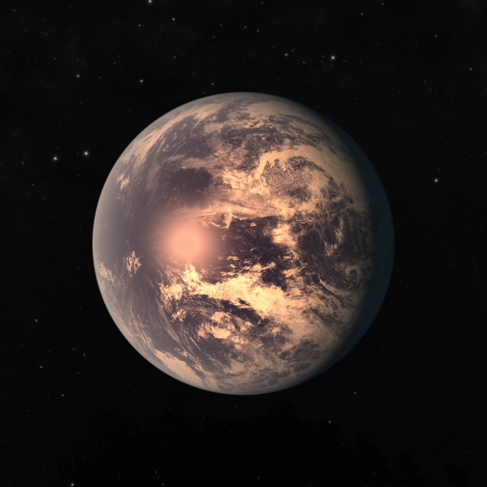
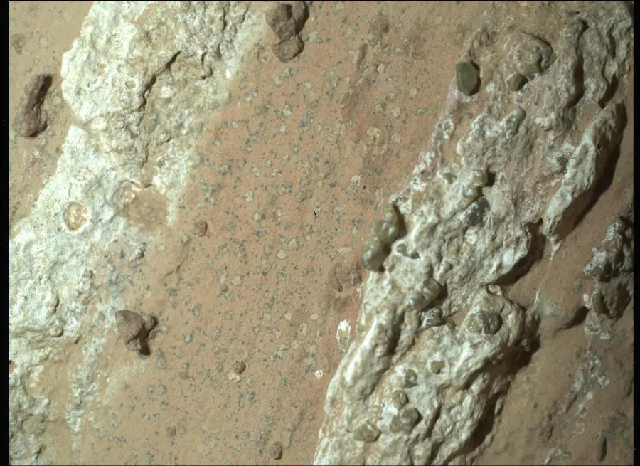
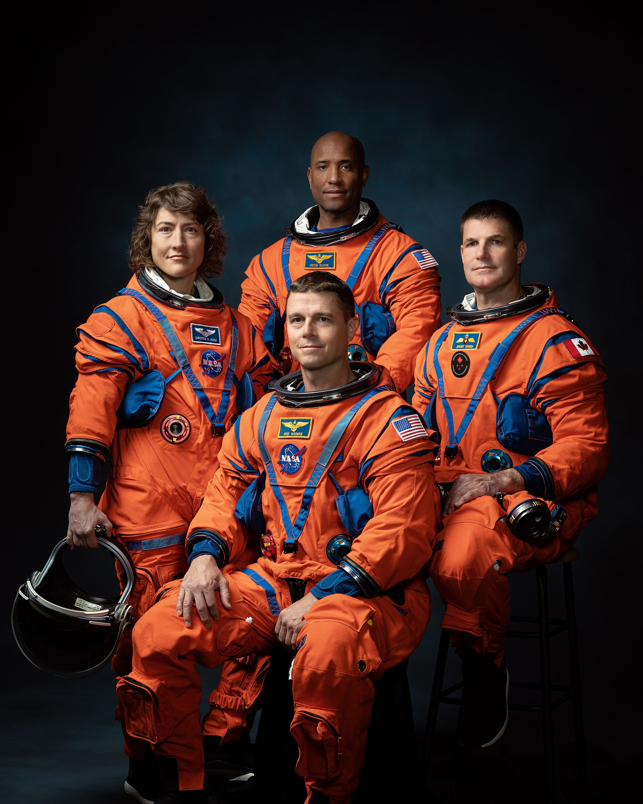
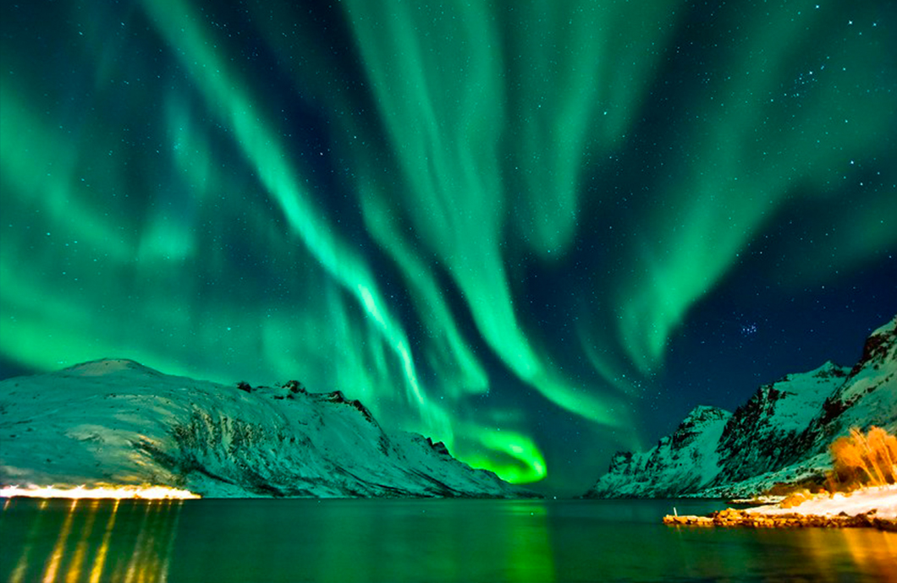
ALÉM DA ESTÉTICA
Câmeras e instrumentos registram diferentes comprimentos de onda, estruturas, temperaturas e características químicas que ajudam cientistas a interpretar ambientes muito distantes.
PLUTÃO — 2015
Antes da New Horizons, Plutão era observado principalmente como um pequeno objeto distante. O encontro de 2015 revelou montanhas congeladas, planícies e uma superfície muito mais complexa do que os modelos anteriores sugeriam.
MARTE
Cheyava Falls não é apenas uma rocha interessante. Imagens, medições químicas e o contexto geológico foram combinados para identificar características classificadas como potenciais bioassinaturas.
JAMES WEBB
Telescópios podem observar comprimentos de onda invisíveis ao olho humano. Para transformar esses dados em imagens compreensíveis, diferentes faixas de observação podem ser representadas utilizando cores visíveis.
Isso significa que uma imagem astronômica pode ser simultaneamente uma representação visual e uma forma de organizar informação científica.
GALERIA ASTRA
Da superfície da Lua às regiões mais distantes observadas por telescópios, cada imagem representa uma pequena parte da tentativa humana de compreender o universo.